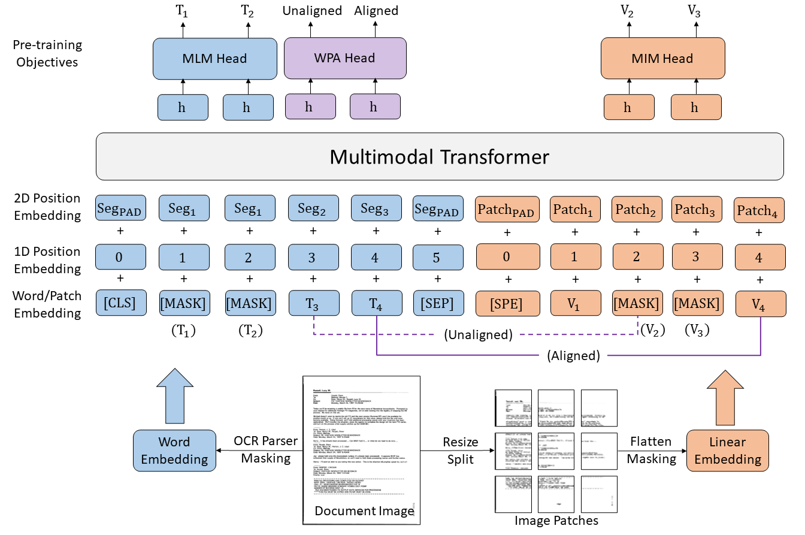
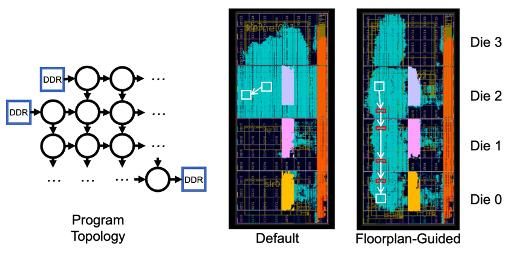
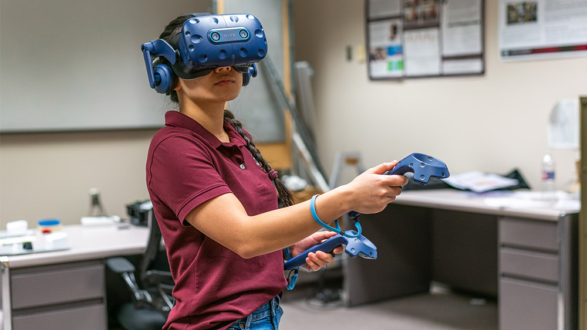

My internship at Aramco allowed me to spearhead an innovative AI initiative by developing and finetuning a state of the art text classification model by using LayoutMv3. Through the integration of word-patch alignment and byte pair encoding, I could achieve a 92.7% accuracy across 13,000+ Atticus documents with 42 labels and a similar result with 1,000+ classified Aramco documents with 27 labels. This breakthrough significantly enhanced Aramco's document processing capabilities since the boom of AI advancement. I also designed a highly efficient preprocessing pipeline to deal with raw input files such as PNG and JSON which revolutionized future training for data management. My work in AI development in document classification into the company's contract advisor program will accelerate operational efficiency and set a new standard for Aramco's technological advancements in AI.
Aramco This project focused on accelerating performances of convolutional neural networks (CNN) by leveraging altered architecture on the Xilinx FPGA boards through Verilog. The optimization of CNN layers and parallel processing of the FPGA allows for faster computational speed and achieving significant latency reduction while keeping the high accuracy. This design included various hardware modules for convolution, pooling and changing activation functions. The result was real time neural network performance with augmented inferencing in computing applications. This work proved that I could push the boundaries of FPGA based AI optimization for future foundations in AI and hardware linkage.
CNN Tutorial I was one of the lead avionics hardware engineers on the Red Rocket team where I led the development and simulations of the asynchronous stepper motor control system for the valve pressurization process. I used a Teensy 4.1 microcontroller with a Nema 23 Bipolar stepper motor to ensure seamless connection between the commands and the valve actuation. To ensure valve integrity I created a proportional integral derivative controller to safeguard the dynamical changes that could occur during operations. Furthermore, I engineered a 24V solenoid spring drivers and designed a buck converter from a TI datasheet in KiCAD. These were integral components that were added into the main PCB design for the rocket's functions. This work allowed for the efforts of everyone to build a reliable hardware platform that are required in aerospace applications and pushing the boundaries of avionic implementation.
Red RocketMy undergraduate role as a VR researcher, I developed a python based program that enhanced the virtual reality experience by tracking player metadata such as pitch, yaw and roll for the head movements along with player trajectories on the axis plane in real time. My leveraging NumPy and other advanced algorithms, my contributions allowed for the mathematical predictive scheduling model to produce a 50% increased improvement in user experienced which are calculated through surveys regarding latency, smoothness and overall frame detection. These experiences were tested on various Unity game applications and this work pushed the idea of Wi-Fi latency being limited in VR environments. This will contribute towards making future VR experiences more fluid and immersive and set a standard for predictive scheduling algorithms.
SPLICE 